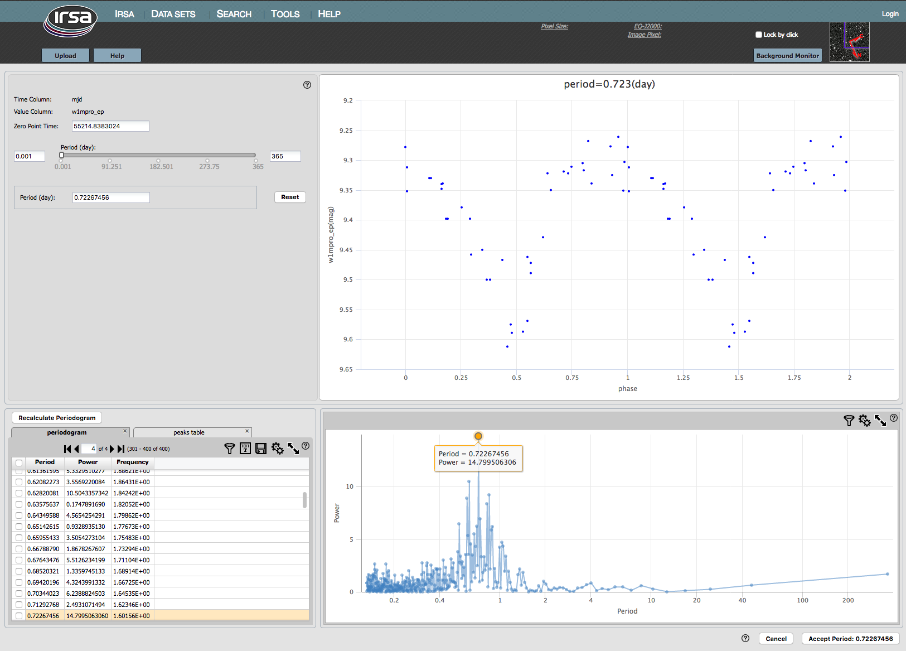
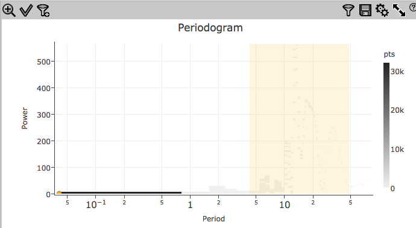
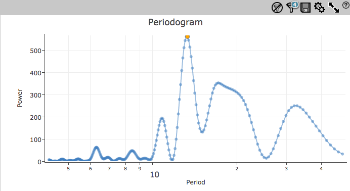
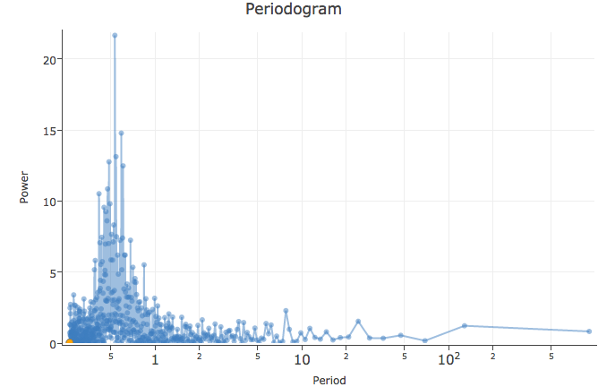

The upper left is another pane, and the upper right will have (eventually) a plot of the light curve. Initially, there is nothing here because no period has been determined yet.
Now we describe these portions of the screen, as well as what to do next.
You can set the period from this screen in three different ways:
Once you have a period you like, click "accept" to accept means to return to the main screen, and plot the phase folded light curve using the selected period on that screen. Cancel to return to the main screen without phase folding the light curve.
This plot is unlike any other plot within this tool in that you cannot control what is plotted or how.
Clicking on the button brings up this configuration pop-up:

From here, you can select from pull-down menus:
Click on 'Reset' to reset the parameters to the defaults.
Click on 'Cancel' to close the pop-up without doing anything.
Click on 'Calculate' to initiate the calculation.
After a periodogram calculation has been completed, a "Recalculate Periodogram" button is located on the upper left of the results pane.

On the left, the two tables are (1) a table listing just the top N peaks, where N is a value you specify in the periodogram finding pop-up (the default is 50); and (2) the periodogram itself (which is in the foreground by default).
On the right, the periodogram is plotted. This is a plot with all the
same basic functionality provided by
this tool in that you can change what and how it is plotted -- for
example, if you want to remove the lines connecting the points, click
on the gears ( ) to bring up options
for the table and choose a different plot option from the pop-up.
) to bring up options
for the table and choose a different plot option from the pop-up.
The plots and tables are dynamically linked. If you click a point in the periodogram, the row is highlighted in the table, and the phased light curve changes. In the settings pane, the period next to "enter manually" is updated to reflect the period you selected.
If you select the other table, the table of peaks, on the left, all the same functionalities apply, except the plot on the lower right is now power versus peak number.
(This power spectrum and period are what you get if you use this example input table from AllWISE.)
Troubleshooting 1: power spectrum is a density plot
If you have a lot of points in your time series (as you might with PTF
in particular), there is likely to be a lot of points in your
periodogram. Because of this, (a) the tool will take a
while to return your results, and (b) if the resultant periodogram has
more than 50,000 points, it may display the periodogram
in a density plot, like this:

To make it plot individual points, you need to filter down the results
to reduce the number of plotted points to < 50,000. You can filter
down the table or the plot. To filter down the table, click on the
filter icon ( ), and add a filter to the
period or power columns. For a more complete introduction to filtering
tables, please see the Filters portion
of the Tables section. To filter down the plot, click and drag in
the plot, then click the filter icon on the upper left of the plot:
), and add a filter to the
period or power columns. For a more complete introduction to filtering
tables, please see the Filters portion
of the Tables section. To filter down the plot, click and drag in
the plot, then click the filter icon on the upper left of the plot:

Once you get fewer points (< 50,000) in the plot, it will render them as
individual points:

And, from here, you can select individual points to phase the LC.
Troubleshooting 2: power spectrum does not have a single peak
If your light curve is sampled with large gaps (as a lot of
WISE/NEOWISE and PTF light curves are), use caution when interpreting
the power spectrum. For example, here is the NEOWISE light curve for
VY Lib, a variable star. If you plot the light curve, you will see big
gaps between clumps of observations.

This (above) is what you get if you let the period searching routine
pick all its own defaults. The period is 0.532 d. There is a peak at
that period that sticks up above the noise.

This (above) is what you get if you force the minimum period to be 0.1
d, which changes the influence of the gaps.
The 0.532 peak no longer stands out from the other peaks, and with
just this result, one could justifiably conclude there is no
significant period here. Except there really is one, and it's 0.532 d.

This (above) is what you get if you use only three of the campaigns.
There are fewer points overall, but there are also fewer big gaps in
the light curve. Now the distribution of peaks in the power spectrum
has changed again, though 0.532 still seems to be the favored peak.
Caution is warranted when interpreting power spectra
if the time series has large gaps. Simulations are helpful to know
what to believe.
Troubleshooting 3: The version of Plot.ly used by the IRSA Viewer sometimes makes ...unusal label choices for logarithmic plots. The two minor ticks between major ticks are 2 and 5, so if they occur between 10 and 100, it means 20 and 50.
The buttons in the lower left of that pane now read "accept" and "cancel." 'Cancel' closes the period-finding window without doing anything further. 'Accept' takes that period as the best possible period, and returns you to the main screen, but now that screen is a little different, because it is after Period Finding.
Go back to Main Screen, Viewer (Initial View) or go on to Main Screen, Viewer (After Period Finder).